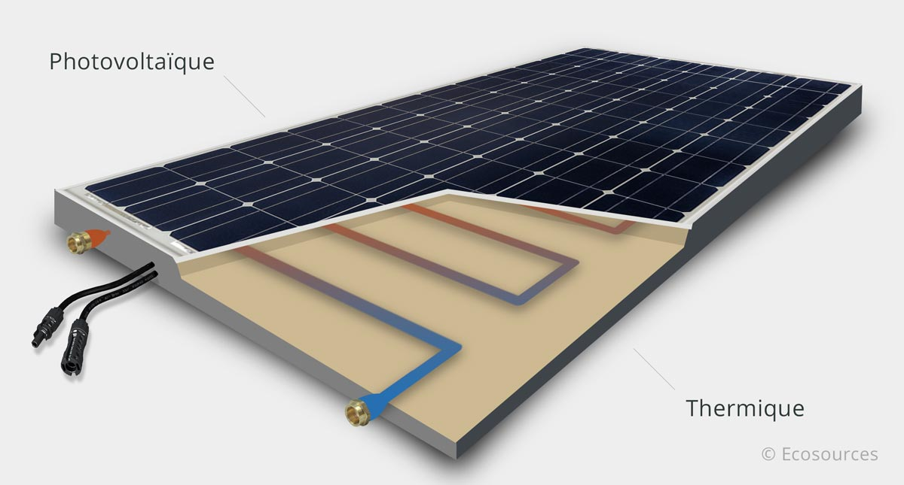

Un panneau hybride est la combinaion d'un panneau photovoltaique et d'un panneau thermique

Pourquoi ?
- Les panneaux photovoltaiques ont tendance à chauffer
- La chaleur dégrade leur rendement
- les gens ont besoin de chaleur
- En récupérant cette chaleur, on refroidit le panneau
Avantages
- Pas de CO2 lors de l'utilisation
- Peu coûteux
- Meilleur rendement (la partie thermique améliore la partie électrique)
Inconvenients
- Cher (mais bon retour sur investissement)
- Complexe à installer
- Demande une surface importante (RIP les HLM)